금속재료기사 (2019-04-27 기출문제)
1과목: 금속조직학
1. 0.5%Wt 탄소강이 A1선 직상에서 평형상태를 유지하고 있는 경우 미세조직을 구성하고 있는 상 성분의 양은? (단, α의 탄소함유량은 0.025%, 공석점의 탄소함유량은 0.8%이다.)
- 페라이트 12%, 오스테나이트 88%
- 페라이트 18%, 오스테나이트 82%
- 페라이트 27%, 오스테나이트 73%
- 페라이트 39%, 오스테나이트 61%
(정답률: 82%)

2. 압력이 일정한 분위기에서 3성분계가 4개의 상으로 존재할 경우 자유도는?
- 0
- 1
- 2
- 3
(정답률: 78%)
3. 2성분계 상태도에 대한 설명으로 틀린 것은?
- 상태도 중에 나타나는 수평선의 자유도는 0(zero)이다.
- 1개의 수평선은 2개 영역의 경계선이 된다.
- 상태도 상의 한 구역에는 3개 이상의 상이 존재할 수 없다.
- 상태도 위에 서로 대응하고 있는 곡선은 평형상태에 있는 2개 상의 조성을 나타낸다.
(정답률: 54%)
4. Bravais 격자 중 격자상수가 a = b = c, 축각이 α=β=γ≠90° 인 결정계는?
- Cubic system
- Triclinic system
- Trigonal system
- Orthorhombic system
(정답률: 70%)
5. 재결정시 변화하는 기계적 성질에 대한 설명으로 옳은 것은?
- 경도가 커진다.
- 연신율이 작아진다.
- 인장강도가 커진다.
- 탄성한도가 작아진다.
(정답률: 55%)
6. 금속을 냉간 가공할 때 나타나는 현상이 아닌 것은?
- 잔류응력 감소
- 전위밀도 증가
- 연신율 저하
- 강도 증가
(정답률: 66%)
7. 50%의 Cu와 50%의 Au로 이루어진 합금의 장범위 규칙도가 1 일 때, 이 합금의 배열 엔트로피는?
- 0 J/mol
- -2.76 J/mol
- 5.76 J/mol
- -0.69 J/mol
(정답률: 73%)
8. 금속간 화합물에 대한 설명으로 옳은 것은?
- 금속과 비금속이 결합한 화합물이다.
- 일반적으로 연하며 간단한 결정구조를 갖는다.
- 일반적으로 융점이 낮아 고온에서 분해되지 않는다.
- CuAl2합금은 금속간화합물이다.
(정답률: 78%)
9. 담금질 열처리에 의하여 얻어지는 조직 중 가장 체적 변화가 큰 조직은?
- roughpearlite
- martensite
- finepearlite
- austenite
(정답률: 82%)
10. 재결정에 대한 설명으로 옳은 것은?
- 재결정 온도가 감소하면 어닐링 시간이 감소한다.
- 금속의 순도가 높을수록 재결정 온도는 증가한다.
- 변형 정도가 작을수록 재결정을 일으키는데 필요한 온도는 높아진다.
- 가공온도가 증가하면 같은 재결정 거동을 얻는데 필요한 변형량이 감소한다.
(정답률: 59%)
11. 평형응고온도 이하까지 냉각되는 현상은?
- 재결정
- 슬립
- 과냉
- 잠열
(정답률: 85%)
12. 다음 그림에서 빗금친 면의 Miller 지수는?
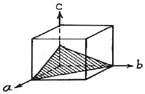
- (100)
- (112)
- (111)
- (110)
(정답률: 84%)
13. 냉간 가공된 금속을 재가열 시 일어나는 현상이 아닌 것은?
- 회복
- 전위증가
- 결정립 성장
- 재결정
(정답률: 71%)
14. 탄소강을 담금질한 후 저온 뜨인 처리할 때 잔류 오스테나이트가 분해하여 뜨임 마텐자이트와 ε탄화물을 형성하는 단계는?
- 1단계(100~120℃)
- 2단계(200~300℃)
- 3단계(300~400℃)
- 4단계(400~650℃)
(정답률: 72%)
15. 금속 및 합금시편에서 X-선 회절기로부터 얻을 수 있는 정보가 아닌 것은?
- 결정구조
- 면간거리
- 원자간 결합력
- 격자상수
(정답률: 70%)
16. 다음 중 비정질에 해당되지 않는 것은?
- 아몰퍼스메탈
- 무정형
- 비결정
- 규칙계
(정답률: 84%)
17. 금속간 화합물(intermetallic compound)에 대한 설명으로 틀린 것은?
- 전기저항이 크다.
- 경도가 높고 취성이 있다.
- 고온에서 분해된다.
- 규칙-불규칙 변태가 있다.
(정답률: 63%)
18. 마텐자이트(martensite)가 경도가 큰 이유를 설명한 것 중 옳은 것은?
- 결정이 조대화되기 때문이다.
- 풀림에 의한 서냉 때문이다.
- 급냉으로 인한 내부응력 때문이다.
- 탄소 원자에 의한 철 격자의 약화 때문이다.
(정답률: 84%)
19. 순철을 매우 느린 속도로 가열하여 910℃에서 동소 변태를 할 때 일어나는 현상은?
- 체적이감소한다.
- 체적의변화가없다.
- 체적이증가한다.
- 결정구조가 HCP로 변한다.
(정답률: 55%)
20. Fe-C 평형상태도에서 나타날 수 있 는반응이 아닌 것은?
- 공정반응
- 포정반응
- 재융반응
- 공석반응
(정답률: 86%)
2과목: 금속재료학
21. 고강도 알루미늄 합금인 두랄루민에 강도를 더욱 증가 시킨 초초두랄루민(extra super duralumin, ESD)은 두랄루민에 어떤 원소를 추가하여 제조되는가?
- C
- W
- Si
- Zn
(정답률: 64%)
22. 황동에서 발생하는 자연균열(season cracking)에 대한 설명으로 틀린 것은?
- 암모니아 분위기에서는 응력부식균열을 방지한다.
- 도료를 사용하거나 아연도금을 하면 방지할 수 있다.
- 관이나 봉 등의 가공재에서 잔류응력에 기인하는 균열이다.
- 185~260℃에서 응력제거 풀림을 하면 발생억제에 효과적이다.
(정답률: 72%)
23. 분말야금에서 요구되는 금속분말의 기본적인 특성이 아닌 것은?
- 입자의 형상
- 입자의 산화성
- 입자의 다공성
- 입도 및 입도분포
(정답률: 69%)
24. 탄소강에 합금원소를 첨가하는 목적이 아닌 것은?
- 내식성 및 내마모성을 향상시킨다.
- 합금원소에 의한 기지를 고용강화한다.
- 미려한 표면에 광택이 생기도록 한다.
- 변태속도의 변화에 따른 열처리 효과를 향상시킨다.
(정답률: 75%)
25. 다음의 조직 중 경도가 가장 큰 것은?
- 마텐자이트
- 펄라이트
- 페라이트
- 베이나이트
(정답률: 78%)
26. 구상흑연주철의 특성에 대한 설명 중 틀린 것은?
- 내식성을 개선하려면 Si, Ni 등을 첨가한다.
- 감쇠능은 일반 탄소강보다 많이 떨어진다.
- Mg, Ca 등을 첨가하여 흑연을 구상화한 것이다.
- 흑연 구상화 처리 후 용탕상태로 방치하면 페딩(fading) 현상이 일어난다.
(정답률: 65%)
27. 탄소강에서 펄라이트(pearlite)의 조직으로 옳은 것은?
- 오스테나이트 + 시멘타이트
- 페라이트 + 오스테나이트
- 페라이트 + 시멘타이트
- 레데뷰라이트 + 오스테나이트
(정답률: 78%)
28. 특수강인 엘린바에 대한 설명으로 옳은 것은?
- 열팽창계수가 아주 크다.
- 규소계 합금 금속이다.
- 구리가 다량 함유되어 있어 전도율이 좋다.
- 초음파 진동소자, 계측기기, 전자장치 등에 사용한다.
(정답률: 72%)
29. 분말야금법의 특징을 설명한 것 중 틀린 것은?
- 고용융점 재료의 제조가 가능하다.
- 절삭가공 생략이 가능하다.
- 제품의 크기에 제한이 없다.
- 공공이 분산된 재료의 제조가 가능하다.
(정답률: 69%)
30. 고융점 금속에 관한 설명으로 틀린 것은?
- 증기압이 낮다.
- Mo는 체심입방격자를 갖는다.
- 융점이 높으므로 고온강도가 크다.
- W, Mo는 열팽창계수가 높고,탄성률이 낮다.
(정답률: 51%)
31. 탄소강에 함유된 원소의 영향으로 틀린 것은?
- P는 결정립을 조대화시킨다.
- Si는 연신율과 충격값을 증가시킨다.
- Mn은 경화능을 증대시키며 고온에서 결정립 성장을 억제시킨다.
- S는 강도, 연신율, 충격치를 감소시킨다.
(정답률: 51%)
32. 비중 약 9.75, 용융점 약 265℃인 금속이며, 특히 응고할 때 팽창하는 금속은?
- Sn
- Ni
- Bi
- Pb
(정답률: 68%)
33. 금속재료 경도시험방법 중 압입에 의한 것이 아닌 것은?
- 쇼어경도
- 비커스경도
- 로크웰경도
- 브리넬경도
(정답률: 77%)
34. 구리합금 중 석출경화성이 있으며, 가장 높은 강도와 경도를 갖는 합금은?
- Cu-Zn
- Cu-Sn
- Cu-Ag
- Cu-Be
(정답률: 58%)
35. 고망간강의 특성에 관한 설명으로 틀린 것은?
- 열전도성이 우수하며, 팽창계수가 작다.
- 상온에서 오스테나이트의 기지를 갖는다.
- 고온에서 서냉하면 결정립계에 탄화물이 석출한다.
- 인성을 부여하기 위하여 수인법(water toughening)을 이용한다.
(정답률: 48%)
36. 구리의 절삭성을 개선시키고 도전율은 약 90%로 유지하게 하는 원소로 약 0.5% 정도를 첨가하는 것은?
- H
- Ag
- Zn
- Te
(정답률: 55%)
37. 오스테나이트계 스테인리스강에 대한 설명으로 틀린 것은?
- 대표적인 조성은 18%Cr – 8%Ni 이다.
- 자성체이며, FCC의 결정구조를 갖는다.
- 오스테나이트조직은 페라이트조직보다 원자밀도가 높아 내식성이 좋다.
- 1100℃ 부근에서 급냉하는 고용화처리를 하여 균일한 오스테나이트조직으로 사용한다.
(정답률: 72%)
38. 60~70%Ni에 Cu를 첨가한 합금은?
- 엘린바
- 플래티나이트
- 모넬메탈
- 콘스탄탄
(정답률: 54%)
39. 용강을 레이들에서 완전 탈산시킨 강은?
- Killed강
- Rimmed강
- Capped강
- Semi-killed강
(정답률: 76%)
40. 가공용 Mg 합금으로 상태도 651℃ 부근에서 포정 반응을 하며 용접성, 고온 성형성 및 내식성이 양호한 합금계는?
- Mg –Mn계 합금
- Mg –Zn계 합금
- Mg –Zr계 합금
- Mg –Ce계 합금
(정답률: 57%)
3과목: 야금공학
41. 다음 리차드 법칙이 나타내는것은?
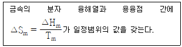
- 금속의 종류에 관계 없이 융해열이 일정하다.
- 원자량 또는 분자량이 크면 융해열이 많이 필요하다.
- 용융점이 높은 금속일수록 많은 융해열이 필요하다.
- 상태의 변화에는 금속에 관계없이 일정량의 열이 필요하다.
(정답률: 74%)
42. 다음 중 열역학 제1법칙을 가장 잘 설명한 것은?
- 에너지 보존의 법칙이다.
- 열적 평형상태에 관한 법칙이다.
- 내부에너지의 변화는 항상 한 일과 같다.
- 내부에너지의 변화는 항상 흡수한 열량과 같다.
(정답률: 81%)
43. 다음 중 염기성 내화물인 것은?
- 규석
- 샤모트
- 납석
- 돌로마이트
(정답률: 77%)
44. 금속의 상변태시 압력변화에 따른 비등점 상승이 나융점 강하를 알고자 할 때 유용한 관계식은?
- Van't Hoff Equation
- Gibbs – Duhem Equation
- Gibbs – Helmholtz Equation
- Clausius – Clapeyron Equation
(정답률: 59%)
45. 100g의 구리로 만든 15℃의 열량계가 15℃의 물 200g에 들어 있다. 100℃의 알루미늄 300g을 넣었을 때, 물의 온도가 34.7℃로 되었다면, 알루미늄의 비열은 약 몇 cal/g·℃ 인가? (단, 구리의 비열은 0.090cal/g·℃이다.)
- 0.21
- 0.3
- 0.41
- 0.51
(정답률: 44%)
46. 깁스–듀헴식(Gibbs–Duhem equation)은 어떤 경우에 쓰는가?
- 2원계에서 두 성분의 활동도계수를 모르는 상태에서 활동도계수를 계산해야 하는 경우
- 3원계에서 한 성분의 혼합 자유에너지를 알고 다른 성분들의 혼합 자유에너지를 계산해야 하는 경우
- 2원계에서 두 성분의 혼합 자유에너지를 모르는 상태에서 자유에너지를 계산해야 하는 경우
- 2원계에서 한 성분의 활동도계수를 알고 다른 성분의 활동도계수를 계산해야 하는 경우
(정답률: 71%)
47. 엔트로피의 절대치를 구할 수 있는 근거를 제공하는 법칙은?
- 열역학 제0법칙
- 열역학 제1법칙
- 열역학 제2법칙
- 열역학 제3법칙
(정답률: 69%)
48. 황 32kg을 완전 연소시키기 위하여 필요한 산소량은 몇 kg 인가?
- 32
- 1
- 12
- 2
(정답률: 76%)
49. 다음 중 발열량이 가장 높은 것은?
- CH4
- C3H8
- C2H2
- H2S
(정답률: 75%)
50. 조연(Pb)의 건식정련시 제일 먼저 부유물(Dross)로 제거되는 성분은?
- Au
- Cu
- Bi
- Zn
(정답률: 53%)
51. 25°C에서 3mole의 H2(g)와 1mole의 N2(g)를 섞어서 이상기체 혼합물을 생성할 때 ΔSM(Entropy of mixing)는 약 몇 cal/K 인가?
- 4.5
- 5.5
- 6.5
- 7.5
(정답률: 48%)
52. 탈산원소 중 탈산력의 세기가 큰 것부터 순서대로 나열한 것은?
- Al＞Ca＞Mn＞Si
- Si＞Al＞Ca＞Mn
- Ca＞Al＞Si＞Mn
- Ca＞Si＞Al＞Mn
(정답률: 57%)
53. 일정 조성의 계에 대한 헬름홀츠 자유에너지는 어떤 변수들을 독립변수로 하는 함수인가?
- 온도와 압력
- 압력과 부피
- 부피와 온도
- 내부에너지와 엔탈피
(정답률: 55%)
54. 고체 탄소가 산화하여 이산화탄소 기체가 되는 반응이 다음과 같을 때, 1000K에서 반응의 형태와 방향으로 옳은 것은? (단, 반응전 산소와 CO2의 분압은 같다.)
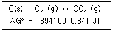
- 형태 : 발열반응, 반응방향 : CO2생성방향
- 형태 : 흡열반응, 반응방향 : CO2생성방향
- 형태 : 발열반응, 반응방향 : CO2생성역방향
- 형태 : 흡열반응, 반응방향 : CO2생성역방향
(정답률: 67%)
55. 10g의 아연과 20g의 구리를 섞어 이상적으로 균일한 황동을 만들었을 때의 엔트로피 증가는 약 몇 cal/K 인가? (단, Cu, Zn의 원자량은 각각 63.5, 65.3g/mole 이다.)
- 3.8
- 0.58
- 0.38
- 6.0
(정답률: 43%)
56. 라울(Raoult)의 법칙에 따르는 이상용액에서 용질물질 B의 활동도 계수 γB는?
- γB=Cv
- γB＜1
- γB=0
- γB=1
(정답률: 66%)
57. 다음 중 이상기체의 가역단열과정에서 성립되는 관계식은? (단, ΔU = 내부에너지변화, q = 열, P = 압력, V = 부피, T = 온도, W = 일)
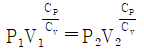
- P = RIT
- ΔU = q = W
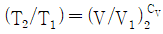
(정답률: 64%)
58. 다음 관계식 중 옳은 것은? (단, A : helmholtz 자유에너지, G : Gibbs 자유에너지, H : 엔탈피, E : 내부에너지, S : 엔트로피, T : 온도, P : 압력, V : 부피)
- H=S+PV
- A=E-TS
- G=A-PV
- G=P–TS
(정답률: 61%)
59. 고로에 주로 사용되는 내화재로 짝지어진 것은?
- 카보랜덤, 마그네시아, 석고질
- 지르코니아질, 규산질, 샤모트질
- 점토질, 탄소질, 고알루미나질
- 탄화규소, 크로마이트질, 납석질
(정답률: 58%)
60. 다음 중 열전도율의 단위로 옳은 것은?
- kcal/h
- kcal/m·h·°C
- Kcal/h·°C
- kcal/m3h·°C
(정답률: 72%)
4과목: 금속가공학
61. 최대 전단응력 항복조건과 관련이 가장 깊은 것은?
- Tresca
- Frank
- Cottrell
- lattice
(정답률: 75%)
62.
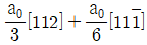
의 값으로 옳은 것은? (단, a0는 격자상수이다.)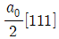
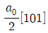
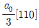
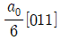
(정답률: 68%)
63. 다음 중 피로파괴에 대한 설명으로 옳은 것은?
- 반복하중 없이 충격에 의해서만 얻어진다.
- 파면이 주 인장응력 방향에 평행하다.
- 파면에는 주로 원형자국(beach mark)이 나타난다.
- 최대 인장응력이 최소가 되어야 피로파괴가 일어난다.
(정답률: 62%)
64. 균질변형에서 경계마찰계수(m)에 대한 설명으로 틀린 것은?
- 부착인 경우는 1 이다.
- 완전 미끄러짐은 0 (Zero)이다.
- 계면에서의 전단응력은 재료의 전단항복응력을 초과한다.
- m은 계면전단강도/전단항복응력으로 표현된다.
(정답률: 69%)
65. 다음 중 잔류응력에 대한 설명으로 틀린 것은?
- 상변태를 촉진한다.
- 재료의 부식을 방지한다.
- 소성변형이나 파괴의 원인이 된다.
- 소량의 소성변형에 의해서도 잔류응력을 제거할 수 있다.
(정답률: 63%)
66. 압출가공에 대한 설명으로 틀린 것은?
- 직접 압출을 전방 압출이라 한다.
- 간접 압출을 후방 압출이라 한다.
- 압출력은 간접 압출이 직접 압출보다 작다.
- 간접압출은 제품의 램 진행방향과 같은 방향으로 압출된다.
(정답률: 72%)
67. 다음 중 압하율을 크게 하는 조건이 아닌 것은?
- 지름이 큰 롤을 사용한다.
- 압연 온도를 높여 준다.
- 롤 회전속도를 빠르게 한다.
- 압연재를 뒤에서 밀어 준다.
(정답률: 74%)
68. 금속에 탄성한계 내의 하중이 가해졌을 때, 응력과 변형률의 관계로 옳은 것은? (단, σ : 공칭응력, E : 탄성계수, ε : 공칭변형률이다.)
- σ = E × ε
- σ = E / ε
- σ = E + ε
- σ = E - ε
(정답률: 77%)
69. 바우싱거 효과(Bauschinger effect)를 설명한 것 중 틀린 것은?
- 비틀림 변형의 경우에서 명백히 관찰된다.
- 소성 변형에 대한 저항이 이력(hysteresis)과 관계가 있다.
- 응력의 변화가 작은 경우 바우싱거 효과는 무시될 수 있다.
- 한번 어느 방향으로 소성변형을 가한 재료에 역방향의 하중을 가하면 전보다 큰 응력에서 항복이 생긴다.
(정답률: 63%)
70. 상온에서 HCP 결정조직을 갖는 금속으로만 짝지어진 것은?
- Be, Zn, Mg
- Ag, Al, Ni
- Ba, Fe, Mo
- Cr, Au, Ti
(정답률: 66%)
71. 다음 그래프 중 완전탄성응력-변형률 곡선으로 가장 적절한 것은?
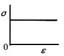
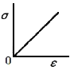
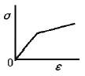
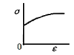
(정답률: 72%)
72. 3개의 주응력 σ1, σ2, σ3의 관계가 σ1＞σ2＞σ3 과 같을 때, 항복응력이 k 라면, 단축인장에서의 항복조건은?
- σ1-σ2=2k
- σ2-σ1=2k
- σ2=2k
- σ1=2k
(정답률: 67%)
73. 크리프의 곡선에 대한 설명 중 틀린 것은?
- 1단계 크리프는 변율이 점차 증가하는 단계이다.
- 2단계 크리프는 정상크리프라고도 한다.
- 3단계 크리프는 시편의 유효단면적이 감소하는 단계이다.
- 크리프 한도란 어떤 시간 후에 크리프가 정지하는 최대응력이다.
(정답률: 57%)
74. Hall-Petch 식으로 설명되는 재료의 강화기구는?
- 분산강화
- 고용강화
- 결정립계에 의한 강화
- 점결함에 의한 경화
(정답률: 63%)
75. 샤르피 충격시험에서 해머를 올렸을 때의 각도를 α, 시험편 파단 후의 각도를 β라고 할 때, 충격흡수 에너지를 구하는 식은? (단, W는 해머의 무게, R은 해머의 회전축 중심에서 무게 중심까지의 거리이다.)
- WR(cosα -1)
- WR(cosβ -1)
- WR(cosβ -cosα)
- WR(cosα -cosβ)
(정답률: 79%)
76. 면심입방격자 구조에서 최대 조밀원자면의 적층순서로 옳은 것은?
- ABC ABCABC
- ABC ACA BCA
- ABC ACB CAB
- ABA BAB ABA
(정답률: 70%)
77. 파괴 과정 중에 소성변형이 거의 없고 균열의 전파속도가 빠른 파괴는?
- 연성파괴
- 취성파괴
- 전단파괴
- 컵-원뿔형파괴
(정답률: 80%)
78. 면심입방격자의 슬립면과 슬립방향을 바르게 나타낸 것은?
- (110)-[111]
- (111)-[110]
- (001)-[110]
- (110)-[101]
(정답률: 73%)
79. 재결정 거동에 영향을 주는 용인과 재결정에 대한 설명으로 틀린 것은?
- 재결정을 일으키는 데에는 최소한의 변형이 필요하다.
- 변형정도가 작을수록 재결정을 일으키는데 필요한 온도는 낮아진다.
- 금속의 순도가 높아질수록 재결정온도는 감소한다.
- 가공온도가 증가하면, 같은 재결정 거동을 얻는데 필요한 변형량이 증가한다.
(정답률: 60%)
80. 회복 및 재결정에 대한 설명으로 틀린 것은?
- 전기저항은 회복의 과정에서 서서히 감소한다.
- 경도는 회복의 과정에서 별로 변하지 않고 재결정의 단계에서 급격히 감소한다.
- 연신율은 회복의 과정에서 별로 변하지 않고 재결정의 단계에서 급격히 증가한다.
- 인장강도는 회복의 단계에서 급격히 감소하고, 재결정 단계에서는 급격히 증가한다.
(정답률: 63%)
5과목: 표면공학
81. 양극산화 두께 측정법 중 비파괴식 두께 측정법은?
- 와류에 의한 방법
- 산화피막 용해에 의한 방법
- 절단시험편을 통한 현미경 측정법
- 충격시험을 통한 방법
(정답률: 48%)
82. 양극산화피막이 경질인 경우 피막의 비커스 경도(Hv)범위로 옳은 것은?
- 500~600
- 350~450
- 200~300
- 50~150
(정답률: 61%)
83. 다음 중 SEM을 이용하여 샘플을 분석할 때 전도성 코팅이 필요한 소재는?
- 플라스틱
- 알루미늄
- Fe-Al합금
- 구리
(정답률: 75%)
84. 고속도금을 하기 위한 방법으로 틀린 것은?
- 금속이온의 농도를 크게 한다.
- 확산정수가 작은 염을 사용한다.
- 액의 온도를 높여 작업한다.
- 액의 교반을 심하게 해준다.
(정답률: 74%)
85. 염욕(salt bath) 열처리 중 염의 일반적인 구비 조건이 아닌 것은?
- 가급적 흡수성 또는 조해성이 적어야 한다.
- 용해가 어렵고 유해가스 발생이 적어야 한다.
- 열처리 온도에서 염욕의 점성이 적고 증발 휘산량이 적어야 한다.
- 염욕의 순도가 높고 유해 불순물을 포함하지 않는 것이 좋다.
(정답률: 53%)
86. 다음 중 뜨임 균열의 대책으로 옳지 않은 것은?
- 빨리 가열한다.
- 잔류응력을 제거한다.
- 응력이 집중되는 부분은 열처리에 적합하게 설계한다.
- 탈탄층을 제거하고 뜨임한다.
(정답률: 77%)
87. 물리적 기상도금인 PVD의 특징이 아닌 것은?
- 처리온도가 높다.
- 기계적으로 응착이 된다.
- 밀착성이 CVD 보다 낮다.
- 가열할 수 없는 물체에 적용할 수 있다.
(정답률: 61%)
88. 1기압에 해당되지 않는 것은?
- 760 torr
- 76 cmHg
- 101325 N/m2
- 1013 Pa
(정답률: 69%)
89. 강재의 침탄시 각종 원소가 침탄에 미치는 영향으로 옳은 것은?
- Si는 침탄성을 증진시키는 효과가 크다.
- Mn은 침탄성을 저해시키는 효과가 크다.
- Ni은 표면탄소농도 및 침탄깊이를 증가시킨다.
- Cr은 강중에 탄소의 확산속도를 느리게 한다.
(정답률: 60%)
90. 질화처리층의 특성으로 틀린 것은?
- 경화층은 얕고, 경화는 침탄한 것보다 우수하다.
- 마모 및 부식에 대한 저항이 크다.
- 질화법 실행 후 퀜칭을 실시하여야 하며 변형이 커서 주의해야 한다.
- 가열온도가 높으면 경도는 저하되지만 질화심도는 커진다.
(정답률: 46%)
91. 다음 중 인산염 피막의 종류가 아닌 것은?
- 인산망간 피막
- 인산아연 피막
- 인산철 피막
- 인산니켈 피막
(정답률: 73%)
92. 물리적 증착법의 종류가 아닌 것은?
- 진공증착법
- 음극스퍼터링
- 이온도금
- 플라즈마아크
(정답률: 62%)
93. 염욕의 열화를 방지하기 위하여 1000℃ 이상의 고온 염욕시 첨가하는 것은?
- NaCl
- CaSi2
- Mn-Al
- H2SO4
(정답률: 55%)
94. 탈탄의 방지책이 아닌 것은?
- 염욕 및 금속욕에서 가열한다.
- 표면에 금속도금을 한다.
- 고온에서 장시간 가열한다.
- 중성 분말제속에서 가열한다.
(정답률: 77%)
95. 시안화구리 도금액 중 고농도액의 조성에 해당되지 않는 것은?
- 수산화칼륨
- 시안화구리
- 산화카드뮴
- 시안화나트륨
(정답률: 66%)
96. 금속 위의 착색은 장식, 내식, 광학적 기능을 얻기 위하여 실시하는데, 다음의 착색 방법 중에서 철강의 착색방법이 아닌 것은?
- 알칼리착색법
- 인산염피막법
- 알로딘(Alodine)법
- 템퍼칼라(Tempercolor)
(정답률: 75%)
97. 용사법에 사용되는 세라믹 재료의 특징으로 틀린 것은?
- 열전도율이 금속에 비해 높다.
- 온도 및 약품에 대해 매우 안정적이다.
- Al2O3는 열전도율이 가장 높다.
- TiO2를 첨가하면 코팅의 기공률이 감소한다.
(정답률: 55%)
98. 주사전자현미경은 조성에 따른 콘트라스트를 영상화 할 수 있어서 상의 분포를 쉽게 알 수 있다. 이러한 조성에 의한 콘트라스트를 발생시키는 전자는?
- 후방산란전자
- 이차전자
- Auger전자
- 캐소드광전자
(정답률: 72%)
99. PVD 법에서 저항발열원으로 사용하는 내열성 금속이 아닌 것은?
- W
- Cu
- Mo
- Ta
(정답률: 63%)
100. 플라즈마 CVD 방법으로 코팅하는 이유가 아닌 것은?
- 밀착력의 향상을 위해
- Aspect Ratio를 높이기 위해
- 소지금속의 변형을 예방하기 위해
- 저온에서 코팅이 가능하게 하기 위해
(정답률: 71%)